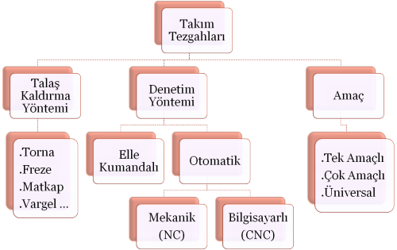
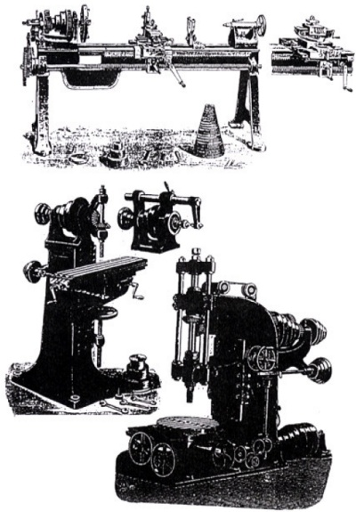

|
Mümin Tutar
Aralýk 2008, Bursa
*Not: Bu makale, yazarýn aþaðýdaki çalýþmalarýndan derlenmiþtir;
Özet
Üretimde verimliliði ve kaliteyi arttýrmak amacýyla 20. yy.'ýn ikinci yarýsýndan itibaren yeni yaklaþýmlar ortaya çýkmýþtýr. Bu yaklaþýmlardan CAD (Computer Aided Design - Bilgisayar Destekli Tasarým), üretilecek parçanýn 3 boyutlu modelinin oluþturulmasý, mevcut parçalar üzerinde deðiþiklikler yapýlmasý ve üretim için gerekli olan veritabanýný hazýrlayan bir sistem yaklaþýmý olarak tanýmlanýrken; CAM (Computer Aided Manufacturing - Bilgisayar Destekli Üretim) ise üretim sürecini kontrolde, doðrudan veya dolaylý olarak yapýlan iþlerin bilgisayar desteðiyle gerçekleþtirilmesini kapsamaktadýr. CAD/CAM, tasarýmcýnýn üretkenliðini ve tasarýmýn kalitesini arttýrmaktadýr. Tezgahlarýn kontrolü, iþlem planlamasý, malzemenin taþýnmasý, kalite kontrol vb. safhalar bu sistem içerisinde bilgisayar desteðiyle gerçekleþtirilmektedir. CNC (Computer Numerical Control - Bilgisayarlý Sayýsal Kontrol) ise sayýsallaþtýrýlmýþ komutlarýn bilgisayardan direkt olarak tezgaha aktarýldýðý ve tezgahýn da geribildirim saðlayabildiði sistemdir.
Bilgisayar sistemlerinin mühendislik alanlarýna uygulanmasý sonucu önce CAD/CAM ve CAM/CNC entegrasyonu saðlanmýþ, tasarým-üretim sürecinin gereði olarak da CAD/CAM/CNC entegrasyonu haline dönüþmüþtür. Bu þekilde tasarým ve üretimin bütün safhalarýnda bilgisayar desteði alýnmaktadýr.
Bu çalýþmada; öncelikle CAD yazýlýmlarý ile araçlar için ergonomik iç kapý kolu modeli tasarlanmýþ ve tasarlanan model CAM yazýlýmlarýna aktarýlmýþ, ardýndan da CAM yazýlýmlarýnda takým yollarý oluþturularak simülasyonla doðrulanmýþ ve CNC freze tezgahýnda modelin üretimi yapýlmýþtýr. Bu süreçte de CAD/CAM/CNC entegrasyonu gerçekleþtirilmiþtir.
Giriþ
CAD, mekanik ve elektromekanik parça ve sistem tasarýmlarýnýn yapýlmasýný kolaylaþtýrmak, hýzlandýrmak, kalitesini yükseltmek gibi amaçlarla bilgisayarlardan yararlanmayý içermektedir. Ürünü her açýdan görmek, o ürünün gerçek yapý ve þekli hakkýnda daha iyi fikir edinmek için bilgisayar ortamýnda ürünün gerçek ölçüleri temel alýnarak görüntüsünün oluþturulmasý saðlanmaktadýr [1].
CAD sistemleri genel olarak yazýlým ve donaným kýsýmlarýndan oluþur. Yazýlým kýsmý, katý modelin oluþturulmasý ile tasarlanan modelin statik, dinamik ve termal performansýnýn belirlenmesinde kullanýlan modülleri kapsamaktadýr. Donaným kýsmý ise monitör, fare, klavye vb. çevre birimlerinden oluþur [2-4].
CAM, sürecin CAD'den sonraki aþamasýdýr. CAD model bilgisi; CAM yazýlýmlarýnda, tornalama, frezeleme gibi yöntemlerle hammaddeyi istenen þekle getirirken kullanýlýr. Örneðin; CAD modelinde seçilen malzeme; devir ve ilerleme hýzlarýnýn, CAD modelinin boyutlarý ise takým seçiminin ve takým yollarýnýn belirlenmesinde kullanýlýr. Böylece gerçek bir makine parçasý, üç boyutlu olarak üretilebilir hale gelir [5].
CAM, ayný zamanda bilgisayar sistemlerini planlama, yönetme ve bir imalat sürecinin kontrolünde doðrudan veya dolaylý olarak yapýlan iþlemleri de kapsamaktadýr. CAD/CAM teknolojisi, tasarým ile imalatýn daha fazla entegrasyonu yönünde geliþmektedir [1,4,6].
Günümüzde kullanýlan CAD ve CAM yazýlýmlarý sürekli olarak geliþtirilmektedir. En çok kullanýcýya sahip olan CAD yazýlýmlarý arasýnda SolidWorks, CATIA, Unigraphics, Pro/ENGINEER, AutoCAD, Inventor sayýlabilir. CAM yazýlýmlarý arasýnda ise CAMWorks, SolidCAM, EdgeCAM, SurfCAM ve Mastercam yazýlýmlarý vardýr. Bu
CAD ve CAM yazýlýmlarýndan bazýlarý entegre, bazýlarý ise baðýmsýz olarak kullanýlmaktadýr.
CNC'de temel düþünce takým tezgahlarýnýn sayý, harf vb. sembollerden meydana gelen, belirli bir mantýða göre kodlanmýþ komutlar yardýmýyla iþletilmesi ve tezgah kontrol ünitesinin parça programý yardýmýyla üretim yapabilmesidir [7].
CAD/CAM Sistemlerinin Tarihçesi
Bilgisayarlý grafik sistemlerinin, dijital bilgisayarlarla birlikte ortaya çýkýp çýkmadýðý çok tartýþýlmýþtýr. Tasarým ve üretim mühendisliðinde bilgisayar kullanýmýnýn tarihi, ilk bilgisayarlarýn çýktýðý 50'li yýllarýn baþlarýna kadar uzanmaktadýr. Ýlk fikir Amerika'da devlet desteði ile gerçekleþtirilen simülasyon ve radar projeleri gibi araþtýrma-geliþtirme çalýþmalarý ile ortaya çýkmýþtýr. Bu çalýþmalar 1949-1952 yýllarýnda ABD hava kuvvetlerinin Massachusetts Institute of Technology (MIT)'e verdiði proje ile uçak sanayisine yönelik olarak geliþtirilmiþtir. Ýlk sistemlerde karmaþýk, uzun ve masraflý, toplu iþlevli programlar büyük iþlemcilere dayalý bilgisayarlarda çalýþtýrýlmýþtýr. 1955-1959 yýlarýnda MIT'de sürdürülen çalýþmalar sýrasýnda D.T.Roos ilk defa "Bilgisayar Destekli Tasarým" terimini kullanmýþtýr[8].
Akademik düzeyde CAD sistemine ilk adým 1963 yýlýnda I.E. Sutherland'ýn MIT'deki doktora tezi ile atýlmýþtýr. "Sketchpad" adý verilen sistemde uygun programlama teknikleri ve veri yapýlarýyla yenileme (görüntüyü sürekli yeniden üreten) ile bir çalýþma sergilenmiþtir.
CAD/CAM uygulamalarýnýn temelini oluþturan pahalý sistemler, önceleri karþýlýðýnýn fazlasýyla alýnabildiði havacýlýk sanayi gibi büyük endüstrilerde kullanýlsa da; teknolojinin geliþmesi ve fiyatlarýn düþmesiyle seksenli yýllarda tüm sektörlerde yaygýnlaþmaya baþlamýþtýr.
Daha güçlü daha ucuz elektronik, artan deneyim ve rekabet, kullanýmýn yaygýnlaþmasýnda büyük rol oynamýþtýr. Ayný yýllarda gözlemlenen diðer bir geliþme de piyasa þartlarý sonucu farklý donaným ve yazýlým kullanan þirketlerin üretim sürecinde bütünleþik bilgi iþleme ihtiyacýndan kaynaklanmýþtýr. Böylece yeni donaným ve yazýlým arabirimleri ve standartlarý geliþtirilmeye baþlanmýþtýr.
1960'larda yüzyýlýn en önemli teknolojik geliþmelerinden biri olarak kabul edilen CAD/CAM tekniði bugün basit bilgisayar grafiði kavramýnýn oldukça ilerisinde bulunmakta ve küçük iþletmelerde bile etkin bir þekilde kullanýlmaktadýr [8].
Takým tezgahý nedir?
Hammadde halinde bulunan bir malzemeden istenilen þekil, biçim ve görünüþe uygun bir malzeme elde etmek için kullanýlan üretim araçlarýna takým tezgahý denir. Takým tezgahlarý ile baþta metal olmak üzere aðaç, mermer, plastik vb. diðer malzemeler de iþlenebilir.
Takým tezgahýna baðlanan hammadde tezgahýn amacýna, görevine, fonksiyonlarýna uygun ve takým tezgahýnýn belirli parçalarýna verilen hareketler sayesinde bir dizi iþlemden geçer. Bu tür tezgahlarla yapýlabilecek imalat, talaþlý ve talaþsýz olmak üzere ikiye ayrýlýr. Talaþlý imalat, iþ parçasý yüzeyinden talaþ (parça) kaldýrýlmak suretiyle yapýldýðý için bu ad verilmiþtir. Tornalama, frezeleme, delme, vargelleme, broþlama, taþlama, honlama, lepleme gibi iþlemler talaþlý imalat yöntemine girerken döküm, dövme, presleme, haddeleme, çekme, sývama, bükme, kaynak yapma, yapýþtýrma, lehimleme gibi iþlemler de talaþsýz imalat yöntemine girmektedir. Tüm bu iþlemlerin ortak özelliði takým, parça ve iþlem üçlüsü üzerine kurulmasýdýr.
Eskiden daha çok talaþsýz imalat yöntemleri kullanýlýrken günümüzde daha çok talaþlý imalat yöntemleri kullanýlmaktadýr. Takým tezgahlarý talaþ kaldýrma yöntemine göre, denetim sistemine göre ve amacýna göre olmak üzere üç þekilde sýnýflandýrýlabilir. Talaþ kaldýrma yöntemine göre tezgahlarýn, takým ile parçanýn hareketleri de göz önünde bulundurularak torna, freze, matkap vb. gibi isimler alýr. Denetim sistemine göre tezgahlarýn, iþlenen parçanýn kesme hýzý, ilerleme hýzý, talaþ derinliði gibi teknolojik bilgileri göz önünde bulundurularak, elle kumandalý ya da otomatik (NC, CNC) çeþitleri vardýr. Amaçlarýna göre tezgahlarýn, farklý parçalarý iþleyebilme kabiliyetine göre üniversal, tek amaçlý ya da çok amaçlý olmak üzere üç çeþidi vardýr. Üniversal tezgahlarda her çeþit parça iþlenebilirken, çok amaçlý tezgahlarda iþlenecek parça çeþidi sýnýrlýdýr. Tek amaçlý tezgahlarda ise sadece tek çeþit iþlem yapýlýr. Örneðin, çok amaçlý tezgahlardan çubuk iþleme tezgahlarýnda sadece silindirik parçalar iþlenirken, tek amaçlý tezgahlardan vida açma tezgahýnda sadece vida açma iþlemi yapýlýr.
Aþaðýda, takým tezgahlarýna ait sýnýflandýrma bir bulunmaktadýr;


1900'lü yýllara ait torna ve freze tezgahlarý |
CNC Takým Tezgahlarýnýn Geliþimi
Takým tezgahlarýnýn ilk görünürlüðü 16. yüzyýla kadar gitmektedir. 1540 yýlýnda Torriano isimli bir Ýtalyan, Ýspanyol kralý V. Charles' a hediye edilecek saatin imalatýnda freze tezgahýnýn ilk örneklerinden birini kullanmýþtýr.
Modern takým tezgahlarýnýn ilk atasý olarak, 1775 yýlýnda John Wilkinson tarafýndan yapýlan yatay delik iþleme tezgahý kabul edilmektedir. Ýlk torna tezgahý ise 1780'li yýllarýn ortasýnda Ýngiliz Henry Maudstay tarafýndan yapýlmýþtýr.
Teknolojik geliþmelere paralel olarak takým tezgahlarýnda kaliteyi artýrmak, kolay üretilebilirliði saðlamak, düþük maliyet ve iþleme koþullarýnýn kolaylýkla deðiþtirilebilmesini saðlamak amacýyla otomasyona geçilmiþtir. Böylece parçanýn iþlenmesine ait verilerinin insan tarafýndan girildiði konvansiyonel tezgahlardan sonra verilerin tezgahýn anlayabileceði kodlardan oluþmuþ program tarafýndan verildiði sayýsal kontrollü (NC) takým tezgahlarý ortaya çýkmýþtýr.
Sayýsal kontrol fikri II. Dünya Savaþý'nýn sonlarýnda ABD hava kuvvetlerinin ihtiyacý olan kompleks uçak parçalarýnýn üretimi için ortaya atýlmýþtýr. CAD/CAM sistemleri ile CNC takým tezgahlarýnýn ilk buluþmasý bu amaca dayanmaktadýr [2,10].
1952 yýlýnda ilk olarak bir CINCINNATTI-HYDROTEL freze tezgahýný NC ile teçhiz ederek bu alandaki ilk baþarýlý çalýþmayý gerçekleþtirmiþlerdir. Bu tarihten itibaren pek çok takým tezgahý imalatçýsý NC takým tezgahý imalatýna baþlamýþtýr. Ýlk önceleri NC takým tezgahlarýnda vakumlu tüpler, elektrik röleleri, komplike kontrol ara yüzleri kullanýlmýþtýr. Ancak bunlarýn sýk sýk tamirleri hatta yenilenmeleri gerektiði için daha sonralarý NC takým tezgahlarýnda daha kullanýþlý olan minyatür elektronik tüp ve yekpare devreler kullanýlmaya baþlandý. Bilgisayar teknolojisindeki hýzlý geliþmeler NC sistemleri de etkilemiþtir.
Bu geliþmelerle birlikte NC tezgahlarda daha ileri düzeyde geliþtirilmiþ olan entegre devre elemanlarý, ucuz ve güvenilir olan donanýmlar kullanýlmaya baþlanmýþtýr. ROM (Read Only Memory) teknolojisinin kullanýlmaya baþlanmasýyla da programlarýn hafýzada saklanmalarý mümkün olmuþtur. Sonuç olarak bu sistemli geliþmeler CNC'nin doðmasýna öncülük etmiþtir [2,10].
|